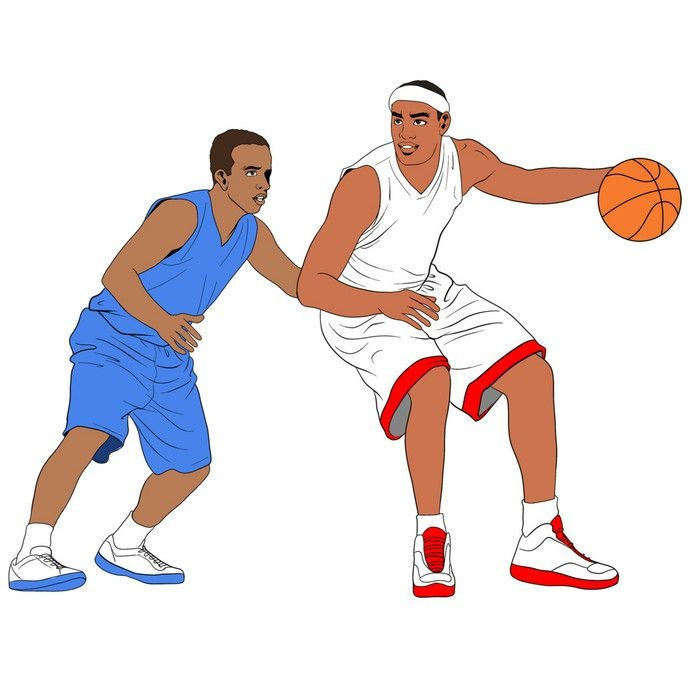

Pramuka
Pramuka
Pramuka
Kegiatan kepramukaan yang mendidik kedisiplinan dan kepemimpinan.
22 Juni 2026 Paskibra
Paskibra
Paskibra
Melatih disiplin, tanggung jawab dan cinta tanah air.
23 Juni 2026

Basket Club
Basket
Ekstrakurikuler olahraga basket bagi siswa.
24 Juni 2026 Futsal
Futsal
Futsal
Klub futsal untuk siswa yang hobi olahraga.
10 Agustus 2026 Pencak Silat
Pencak Silat
Pencak Silat
Seni bela diri dan self-defense.
11 Agustus 2026 Testor
Testor
Paduan Suara
Melatih vokal dan kekompakan tim.
12 Agustus 2026